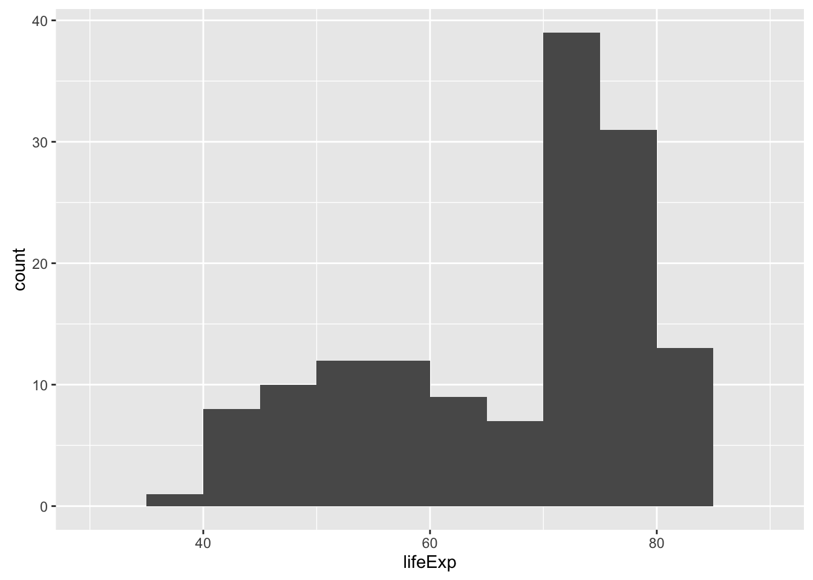
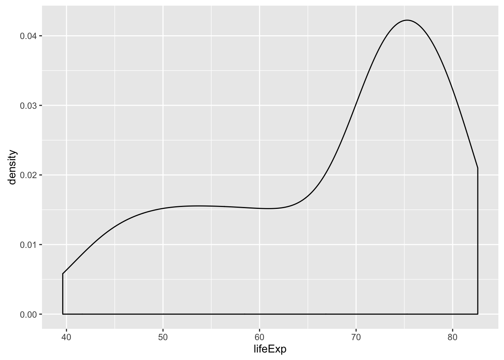
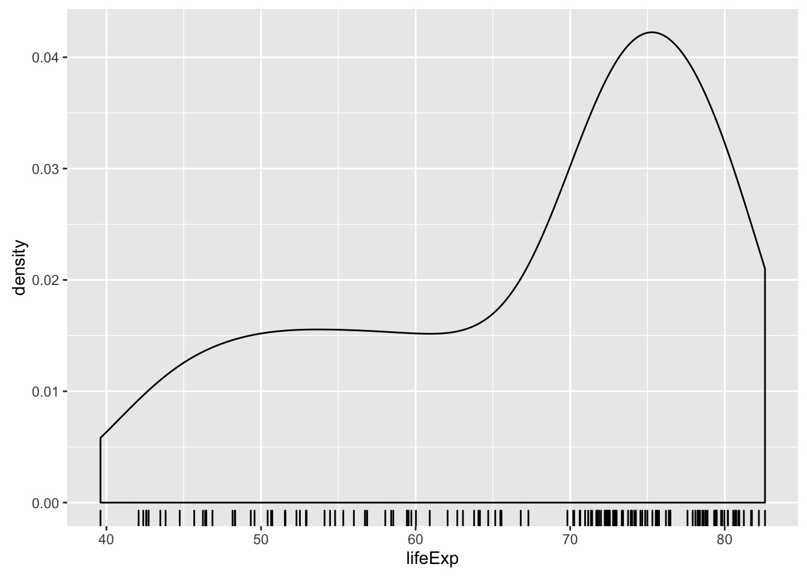
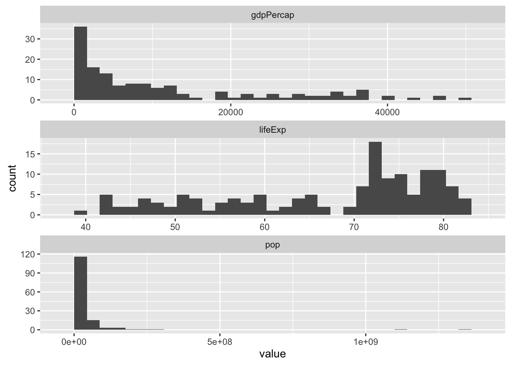
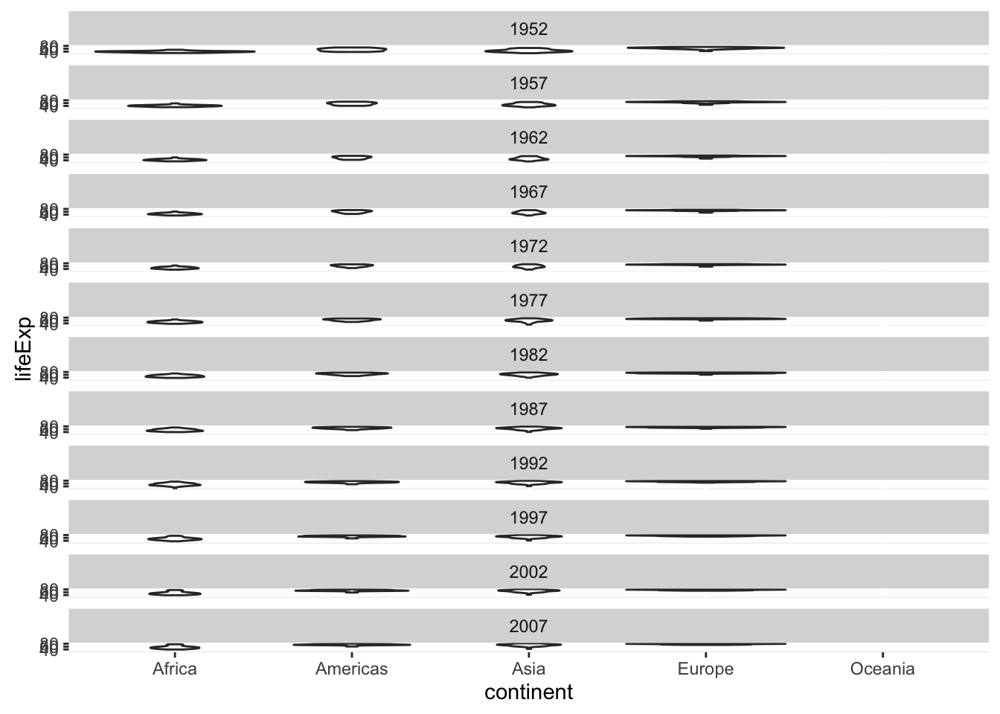
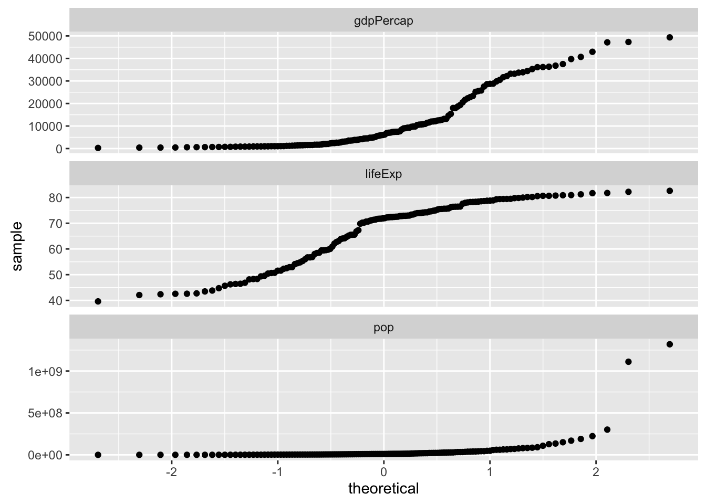

POL S/CS&SS 501, University of Washington, Winter 2016
$$ \DeclareMathOperator{\mean}{mean} \DeclareMathOperator{\var}{var} \DeclareMathOperator{\E}{E} \DeclareMathOperator{\argmin}{argmin} \DeclareMathOperator{\argmax}{argmax} $$Descriptive Statistics in R
Jeffrey Arnold
January 20, 2016
This lesson provides examples of functions to calculate summary statistics in R. It will use the gapminder.
This lesson will also use the following packages,
library("dplyr")
library("tidyr")
library("ggplot2")Gapminder Data
For this lesson, we will use the gapminder data in the gapminder package,
library("gapminder")
data("gapminder")For simplicity, we will focus on only the 2007 data,
gapminder2007 <- gapminder[gapminder$year == 2007, ]and save life expectancy and continent to their own vectors,
lifeExp <- gapminder2007$lifeExp
continent <- gapminder2007$continentMiscellaneous Functions
R provides functions to calculate many common descriptive statistics:
mean(x): Meanmedian(x): mediansd(x): Standard deviationvar(x): VarianceIQR(x): Inter-quartile rangefivenumber(x): Tukey’s five number summaryquantile(x, prob): Quantilesrange(x): Minimum and maximumdiff(range(x)): Range
For life expectancy calculate the mean,
mean(lifeExp)## [1] 67.00742median,
median(lifeExp)## [1] 71.9355five number summary (minimum, lower-hinge, median, upper-hinge, maximum)
fivenum(lifeExp)## [1] 39.6130 56.8670 71.9355 76.4230 82.6030standard deviation and variance,
sd(lifeExp)## [1] 12.07302var(lifeExp)## [1] 145.7578inter-quartile range,
IQR(lifeExp)## [1] 19.253minimum and maximum,
min(lifeExp)## [1] 39.613max(lifeExp)## [1] 82.603the min (0%), 1st quartile (25%), median (50%), 3rd quartile (75%), and maximum (100%),
quantile(lifeExp)## 0% 25% 50% 75% 100%
## 39.61300 57.16025 71.93550 76.41325 82.60300arbitrary quantiles,
quantile(lifeExp, prob = c(.33, .54, .86))## 33% 54% 86%
## 62.89092 72.48426 79.33718The range function returns the minimum and maximum, so take the difference of the range to calculate the range (maximum - minimum),
range(lifeExp)## [1] 39.613 82.603diff(range(lifeExp))## [1] 42.99Descriptive statistics by groups
The easiest way to calculate descriptive statistics by groups is to use dplyr summarize() with group_by(),
gapminder %>%
group_by(year) %>%
summarize(lifeExp_mean = mean(lifeExp),
lifeExp_median = median(lifeExp),
gdpPercap_mean = mean(gdpPercap),
gdpPercap_sd = sd(gdpPercap))## Source: local data frame [12 x 5]
##
## year lifeExp_mean lifeExp_median gdpPercap_mean gdpPercap_sd
## (int) (dbl) (dbl) (dbl) (dbl)
## 1 1952 49.05762 45.1355 3725.276 9321.065
## 2 1957 51.50740 48.3605 4299.408 9869.662
## 3 1962 53.60925 50.8810 4725.812 8667.363
## 4 1967 55.67829 53.8250 5483.653 8095.315
## 5 1972 57.64739 56.5300 6770.083 10614.383
## 6 1977 59.57016 59.6720 7313.166 8362.489
## 7 1982 61.53320 62.4415 7518.902 7733.845
## 8 1987 63.21261 65.8340 7900.920 8288.281
## 9 1992 64.16034 67.7030 8158.609 9031.846
## 10 1997 65.01468 69.3940 9090.175 10171.493
## 11 2002 65.69492 70.8255 9917.848 11154.115
## 12 2007 67.00742 71.9355 11680.072 12859.937Alternatively, grouping by continent and year,
gapminder %>%
group_by(continent, year) %>%
summarize(lifeExp_mean = mean(lifeExp),
lifeExp_median = median(lifeExp),
gdpPercap_mean = mean(gdpPercap),
gdpPercap_sd = sd(gdpPercap))## Source: local data frame [60 x 6]
## Groups: continent [?]
##
## continent year lifeExp_mean lifeExp_median gdpPercap_mean gdpPercap_sd
## (fctr) (int) (dbl) (dbl) (dbl) (dbl)
## 1 Africa 1952 39.13550 38.8330 1252.572 982.9521
## 2 Africa 1957 41.26635 40.5925 1385.236 1134.5089
## 3 Africa 1962 43.31944 42.6305 1598.079 1461.8392
## 4 Africa 1967 45.33454 44.6985 2050.364 2847.7176
## 5 Africa 1972 47.45094 47.0315 2339.616 3286.8539
## 6 Africa 1977 49.58042 49.2725 2585.939 4142.3987
## 7 Africa 1982 51.59287 50.7560 2481.593 3242.6328
## 8 Africa 1987 53.34479 51.6395 2282.669 2566.5319
## 9 Africa 1992 53.62958 52.4290 2281.810 2644.0756
## 10 Africa 1997 53.59827 52.7590 2378.760 2820.7281
## .. ... ... ... ... ... ...To calculate several descriptive statistics for several variables, the function summarize_each is useful,
gapminder %>%
group_by(year) %>%
summarize_each(funs(mean, median), lifeExp, gdpPercap)## Source: local data frame [12 x 5]
##
## year lifeExp_mean gdpPercap_mean lifeExp_median gdpPercap_median
## (int) (dbl) (dbl) (dbl) (dbl)
## 1 1952 49.05762 3725.276 45.1355 1968.528
## 2 1957 51.50740 4299.408 48.3605 2173.220
## 3 1962 53.60925 4725.812 50.8810 2335.440
## 4 1967 55.67829 5483.653 53.8250 2678.335
## 5 1972 57.64739 6770.083 56.5300 3339.129
## 6 1977 59.57016 7313.166 59.6720 3798.609
## 7 1982 61.53320 7518.902 62.4415 4216.228
## 8 1987 63.21261 7900.920 65.8340 4280.300
## 9 1992 64.16034 8158.609 67.7030 4386.086
## 10 1997 65.01468 9090.175 69.3940 4781.825
## 11 2002 65.69492 9917.848 70.8255 5319.805
## 12 2007 67.00742 11680.072 71.9355 6124.371Alternatively, if you want more control, you can combine summarize with gather and spread,
gapminder_by_year <-
gapminder %>%
gather(variable, value, -year, -country, -continent) %>%
group_by(year, variable) %>%
summarize(mean = mean(value),
sd = sd(value),
median = median(value),
max = max(value),
min = min(value))
gapminder_by_year## Source: local data frame [36 x 7]
## Groups: year [?]
##
## year variable mean sd median max
## (int) (chr) (dbl) (dbl) (dbl) (dbl)
## 1 1952 gdpPercap 3.725276e+03 9.321065e+03 1968.5283 108382.35
## 2 1952 lifeExp 4.905762e+01 1.222596e+01 45.1355 72.67
## 3 1952 pop 1.695040e+07 5.810086e+07 3943953.0000 556263527.00
## 4 1957 gdpPercap 4.299408e+03 9.869662e+03 2173.2203 113523.13
## 5 1957 lifeExp 5.150740e+01 1.223129e+01 48.3605 73.47
## 6 1957 pop 1.876341e+07 6.550429e+07 4282942.0000 637408000.00
## 7 1962 gdpPercap 4.725812e+03 8.667363e+03 2335.4395 95458.11
## 8 1962 lifeExp 5.360925e+01 1.209725e+01 50.8810 73.68
## 9 1962 pop 2.042101e+07 6.978865e+07 4686039.5000 665770000.00
## 10 1967 gdpPercap 5.483653e+03 8.095315e+03 2678.3347 80894.88
## .. ... ... ... ... ... ...
## Variables not shown: min (dbl)If you need to convert back to a dataset where observations are years,
gapminder_by_year %>%
gather(stat, value, -year, -variable) %>%
unite(varname, variable, stat) %>%
spread(varname, value) %>%
glimpse()## Observations: 12
## Variables: 16
## $ year (int) 1952, 1957, 1962, 1967, 1972, 1977, 1982, 198...
## $ gdpPercap_max (dbl) 108382.35, 113523.13, 95458.11, 80894.88, 109...
## $ gdpPercap_mean (dbl) 3725.276, 4299.408, 4725.812, 5483.653, 6770....
## $ gdpPercap_median (dbl) 1968.528, 2173.220, 2335.440, 2678.335, 3339....
## $ gdpPercap_min (dbl) 298.8462, 335.9971, 355.2032, 349.0000, 357.0...
## $ gdpPercap_sd (dbl) 9321.065, 9869.662, 8667.363, 8095.315, 10614...
## $ lifeExp_max (dbl) 72.670, 73.470, 73.680, 74.160, 74.720, 76.11...
## $ lifeExp_mean (dbl) 49.05762, 51.50740, 53.60925, 55.67829, 57.64...
## $ lifeExp_median (dbl) 45.1355, 48.3605, 50.8810, 53.8250, 56.5300, ...
## $ lifeExp_min (dbl) 28.801, 30.332, 31.997, 34.020, 35.400, 31.22...
## $ lifeExp_sd (dbl) 12.22596, 12.23129, 12.09725, 11.71886, 11.38...
## $ pop_max (dbl) 556263527, 637408000, 665770000, 754550000, 8...
## $ pop_mean (dbl) 16950402, 18763413, 20421007, 22658298, 25189...
## $ pop_median (dbl) 3943953, 4282942, 4686040, 5170176, 5877996, ...
## $ pop_min (dbl) 60011, 61325, 65345, 70787, 76595, 86796, 985...
## $ pop_sd (dbl) 58100863, 65504285, 69788650, 78375481, 88646...Table and Mode
The table function counts the number of observations equal to a value,
table(continent)## continent
## Africa Americas Asia Europe Oceania
## 52 25 33 30 2This can be used to find the mode for a discrete variable 1,
continent_counts <- table(continent)
names(continent_counts)[continent_counts == max(continent_counts)]## [1] "Africa"table(continent)counts the number of observations taking each valuenames(continent_counts)In the vector returned by the table command, the values of the observations are the names, and counts are values in the vector.continent_counts == max(continent_counts)isTRUEfor all (possibly more than one) elements which have the largest counts
That code only works well for discrete data. The basic method used to find a mode of continuous is to find the maximum value of the kernel density function. See package modeest function mlv for various methods to calculate the mode, including for methods to estimate the mode of continuous distributions.
library("modeest")##
## This is package 'modeest' written by P. PONCET.
## For a complete list of functions, use 'library(help = "modeest")' or 'help.start()'.mlv(lifeExp, method = "shorth")## Mode (most likely value): 76.00124
## Bickel's modal skewness: -0.4647887
## Call: mlv.default(x = lifeExp, method = "shorth")Plots
Several plots are useful for descriptive statistics: boxplots, bar plots, histograms, density plots, and quantile plots.
Bar-plot
A bar plot describes the distribution of a discrete-variable,
ggplot(gapminder2007, aes(x = continent)) +
geom_bar()This could be faceted in order to compare across different categories,
ggplot(gapminder, aes(x = cut(lifeExp, c(0, 40, 50, 60, 70, 80, Inf)))) +
geom_bar() +
facet_wrap(~ year, ncol = 1) +
xlab("Life Expectancy categories")Histograms, Density
A histogram shows the distribution
ggplot(gapminder2007, aes(x = lifeExp)) +
geom_histogram() By default, geom_histogram gives the message, if you do not choose the widths of the bins,
`stat_bin()` using `bins = 30`. Pick better value with `binwidth`.You can manually choose a binwidth to remove that message. In this case, 5 years sounds reasonable,
ggplot(gapminder2007, aes(x = lifeExp)) +
geom_histogram(binwidth = 5)
We can compare across groups using faceting. To compare the distributions across continents,
ggplot(gapminder2007, aes(x = lifeExp)) +
geom_histogram(binwidth = 5) +
facet_wrap(~continent, ncol = 1)or continents and years,
ggplot(gapminder, aes(x = lifeExp)) +
geom_histogram(binwidth = 5) +
facet_grid(year ~ continent)Another way to compare groups is to use color and transparency to overlap histograms, although this will not work for black and white publications,
ggplot(gapminder2007, aes(x = lifeExp, fill = continent)) +
geom_histogram(binwidth = 5, alpha = 0.3)ggplot(gapminder, aes(x = lifeExp, fill = continent)) +
geom_histogram(alpha = 0.3, binwidth = 5) +
facet_wrap(~year, ncol = 1)
Density plots are a continuous alternative to histograms.
ggplot(gapminder2007, aes(x = lifeExp)) +
geom_density() It is often useful to combine a density plot with a rug plot, which shows a tick mark for every value in the data,
ggplot(gapminder2007, aes(x = lifeExp)) +
geom_density() +
geom_rug()
We can compare across groups using faceting. To compare the distributions across continents,
ggplot(gapminder2007, aes(x = lifeExp)) +
geom_density() +
geom_rug() +
facet_wrap(~continent, ncol = 1)or continents and years,
ggplot(gapminder, aes(x = lifeExp)) +
geom_density() +
geom_rug() +
facet_grid(year ~ continent)Another way to compare groups is to use color, although this will not work well for black and white publications,
ggplot(gapminder2007, aes(x = lifeExp, color = continent)) +
geom_density()ggplot(gapminder, aes(x = lifeExp, color = continent)) +
geom_density() +
facet_wrap(~year, ncol = 1)To calculate histograms for multiple variables, it is easiest to use gather() to make the dataset long, with one row per (country, variable),
gapminder2007_long <- gather(gapminder2007, variable, value,
-country, -year, -continent)
ggplot(gapminder2007_long, aes(x = value)) +
geom_histogram() +
facet_wrap(~variable, ncol = 1, scales = "free")
Boxplot
Boxplots summarizes the distribution into five values and indicates outliers,
- median: middle line
- 1st quartile: bottom of box
- 3rd quartile: top of box
- lowest datum within 1.5 IQR of the lower quartile: end of lower whisker
- highest datum within 1.5 IQR of the upper quartile: end of upper whisker
Boxplots are best used for comparing the distributions of several groups.
ggplot(gapminder2007, aes(x = continent, y = lifeExp)) +
geom_boxplot() Note that geom_boxplot requires an x aesthetic. If you need to make a boxplot for only one group (which may not be a good idea),
ggplot(gapminder2007, aes(x = 1, y = lifeExp)) +
geom_boxplot() +
xlab("")More comparisons can be made by faceting over other categories,
ggplot(gapminder, aes(x = continent, y = lifeExp)) +
geom_boxplot() +
facet_wrap(~year, ncol = 1)A continuous alternative to a boxplot is a violin plot, which can be thought of as a cross between a boxplot and a density plot,
ggplot(gapminder2007, aes(x = continent, y = lifeExp)) +
geom_violin()ggplot(gapminder, aes(x = continent, y = lifeExp)) +
geom_violin() +
facet_wrap(~year, ncol = 1)
QQ Plot
Quantile plots compare the empirical cumulative distribution function of a sample to a theoretical distribution (usually the normal). These are often used to check the normality of sample data.
ggplot(gapminder2007, aes(sample = lifeExp)) +
geom_qq()This plots the qq-plots of several variables in the gapminder data,
ggplot(gather(gapminder2007, variable, value, -year, -continent, -country),
aes(sample = value)) +
geom_qq() +
facet_wrap(~variable, ncol = 1, scales = "free_y") None of these distributions are particularly normal. However, transforming gdpPercap and pop makes them closer to normal,
ggplot(mutate(gapminder2007,
gdpPercap = log(gdpPercap),
pop = log(pop)) %>%
gather(variable, value,
-year, -continent, -country),
aes(sample = value)) +
geom_qq() +
facet_wrap(~variable, ncol = 1, scales = "free_y")R does not have a built-in function to calculate the mode of a sample distribution. The function
modein R is not related to the statistics, but is a programming function related to how the object is stored in memory.↩

This work is licensed under a Creative Commons Attribution-NonCommercial-ShareAlike 4.0 International License. R code is licensed under a BSD 2-clause license.